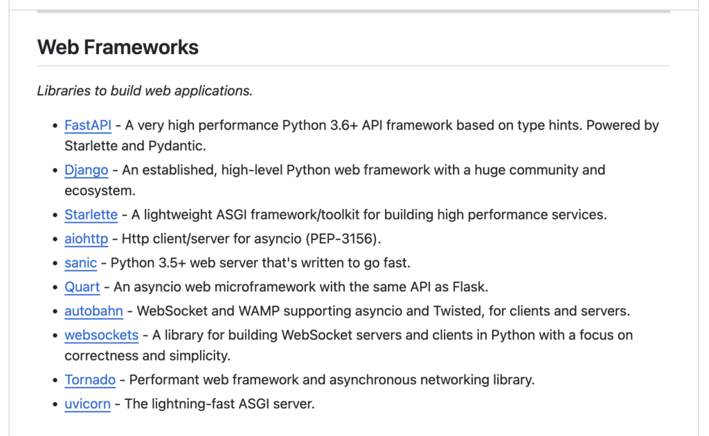
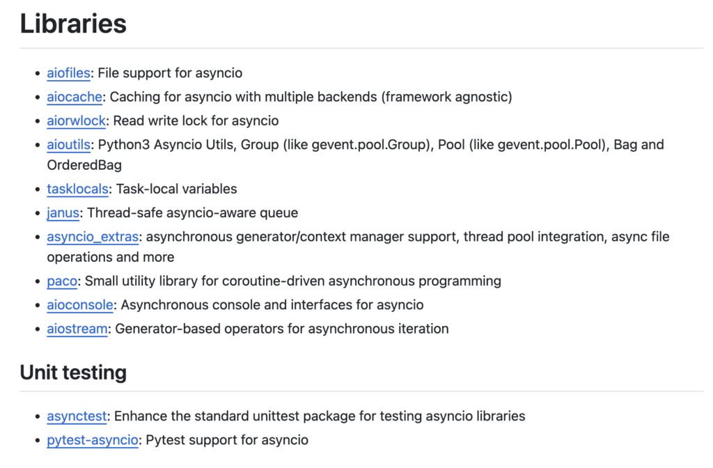
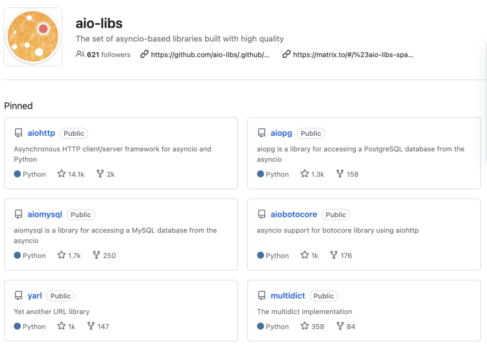
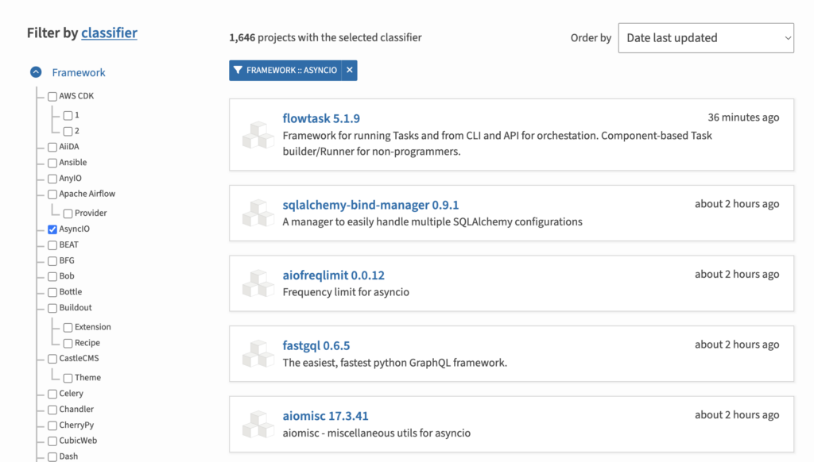
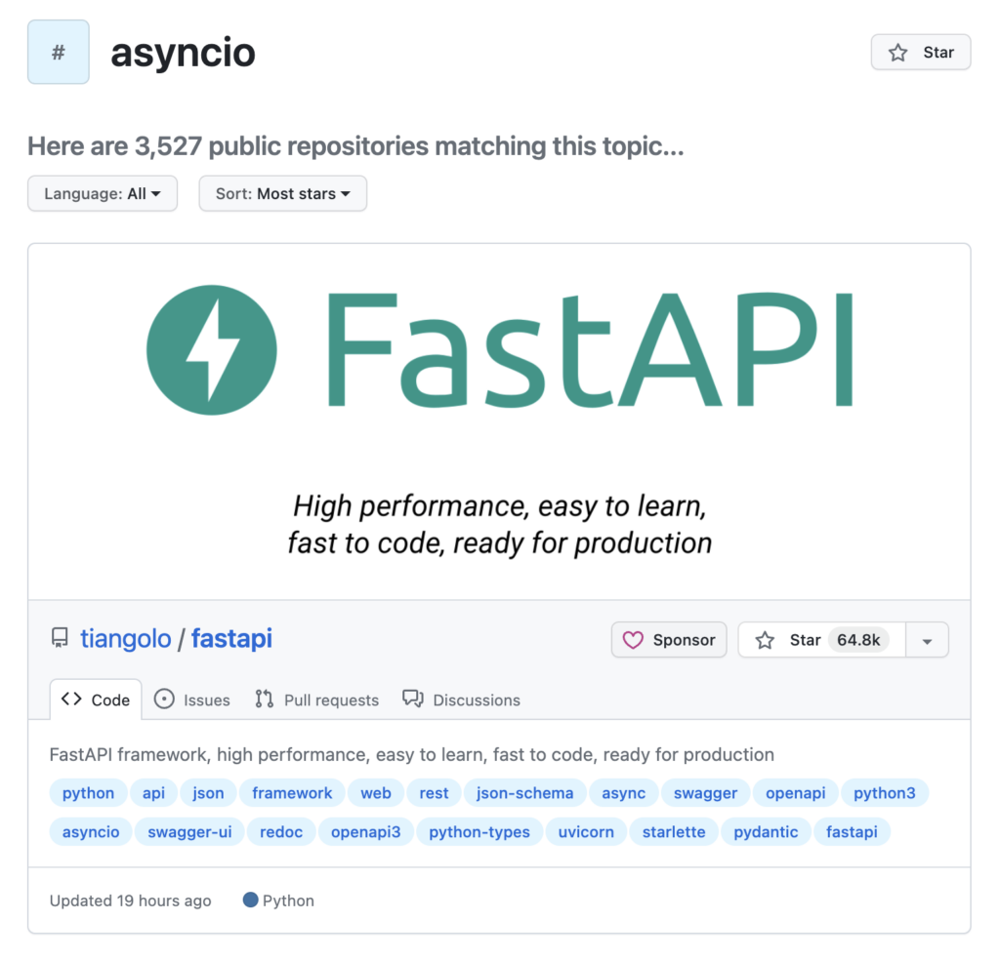

Python Asyncio Libraries: 5 Places Where To Find Them
Python asyncio development can be faster and our applications can be made more capable by using third-party libraries.
The problem is finding high-quality asyncio libraries.
Thankfully, there are a number of Python library repositories and curated lists that we can consult when we require a third-party asyncio library that offers a specific feature.
In this tutorial, you will discover where to find third-party Python asyncio libraries.
Let's get started.
Need Third-Party Asyncio Libraries
Asyncio provides asynchronous programming in Python via coroutines and the async/await language syntax.
Nevertheless, the asyncio module in the standard library is simple and quite limited. Sometimes we need additional capabilities in our asyncio programs provided by third-party libraries.
Third-party libraries are typically developed by other asyncio developers solving common and very real problems encountered whilst developing Python asyncio programs.
Using third-party asyncio libraries is crucial for several reasons:
- Specialized Functionality: Third-party libraries offer specialized tools and utilities that streamline development with asyncio. They augment asyncio's core functionalities with additional features like sophisticated event loops, protocol implementations, or higher-level abstractions for common async patterns, easing the development process.
- Enhanced Performance: These libraries often come with optimized implementations and algorithms tailored for specific use cases. They provide performance enhancements, improving efficiency in handling asynchronous tasks, I/O operations, or managing concurrent executions, thereby optimizing overall application performance.
- Expanded Ecosystem: They contribute to a richer ecosystem by providing diverse solutions for various domains. These libraries cater to different needs, including networking, web frameworks, databases, testing, and more. Leveraging these libraries allows developers to access a wide range of tools and functionalities, fostering innovation and flexibility in development.
- Community Contributions: Third-party libraries often result from community-driven initiatives. They are continuously refined, updated, and maintained by a community of developers, ensuring a more collaborative and responsive approach to problem-solving. This collaborative effort contributes to better code quality, reliability, and long-term support.
So where can we find high-quality third-party libraries for asyncio?
5 Places To Find Asyncio Libraries
There are at least 5 great places that you can use to find asyncio libraries, they are:
- Awesome asyncio (curated, but limited)
- ThirdParty Page on the Asyncio Wiki (dated, but great)
- aio-libs Project (high-quality libs)
- PyPi Search For "asyncio" (where all python packages are listed)
- GitHub Search For "asyncio" (where all async code lives)
At least, these are the places I check, in addition to a Google search. Typically, a Google search does not find what I need.
Do you know any more? Please let me know in the comments below.
Let's take a closer look at each in turn.
Awesome Asyncio
The "Awesome Asyncio" project provides a list of third-party asyncio libraries organized by topics.
A curated list of awesome Python asyncio frameworks, libraries, software and resources
The list accepts additions in the form of pull requests and was created and maintained by Timo Furrer.
This is not a complete list of libraries, but rather a curated list, and additions to the list appear to be slow to appear, e.g. the project is at least 7 years old and has not seen an addition for the last 10 months (at the time of writing).
... it's pretty hard to keep yourself up-to-date with the most awesome packages out there. Find some of those awesome packages here and if you are missing one we count on you to create an Issue or a Pull Request with your suggestion.
The libraries and resources on asyncio are organized by 11 topics, they are:
- Web Frameworks
- Message Queues
- Database Drivers
- Networking
- GraphQL
- Testing
- Alternative Loops
- Misc
- Writings
- Talks
- Alternatives to asyncio
Although limited, it is a great place to start for the top-shelf asyncio libraries and frameworks.

ThirdParty Page on the Asyncio Wiki
Before asyncio was added to the Python standard library, it was developed as a third-party library and hosted on GitHub as the "asyncio" project.
This repository is now closed, although still has some interesting and helpful documentation.
One example is a Wiki that was maintained listing known third-party libraries for asyncio, most of which still exist and were updated after asyncio was added to Python proper.
The list is curated and was developed by manual searches of PyPi for libraries that implement the "AsyncIO" framework.
A list of libraries for AsyncIO is available on PyPI with Framework::AsyncIO classifier.
The list is a snapshot in time, frozen in late 2017, but I still find it useful all these years later.
Projects are organized by a number of helpful categories, such as:
- Alternative event loop implementations
- Libraries
- Unit Testing
- Protocol Implementations
- Web Frameworks
- ORMs
- Integrations
- Adapters for other event loops
- Misc

aio-libs Project
The aio-libs project on GitHub is a collection of third-party libraries for asyncio.
The set of asyncio-based libraries built with high quality.
Today, it is a community of 65 GitHub repositories and a discussion group.
Before that, it was a Google Group that was shut down in 2021.
I believe all of the projects are high-quality and currently maintained.
This is an invaluable resource.
You can search the repositories, sort by star ratings, and more.

PyPi Search For "asyncio"
The Python Package Index or PyPi is the official repository for third-party Python libraries.
It is the place to go to find Python libraries, and it is enormous.
There are many ways to navigate the repository.
The first is to search for all repositories that self-select use of the "asyncio" framework:
At the time of writing, this lists 1,646 projects.
Another approach is to search the site for the keyword "asyncio":
At the time of writing, this lists 6,491 projects. Ouch!
If a high-quality third-party asyncio library exists, it will be on PyPi. Refine the search by your specific needs.
A limitation of this repository is that we cannot filter by quality. The best it offers is the date last updated.

GitHub Search For "asyncio"
Python projects are mostly hosted on GitHub (although not universally, some are GitLab).
It is (theoretically) possible for an amazing third-party asyncio library to not be on PyPi for distribution, yet still hosted on GitHub.
More likely, we can search GitHub as an alternative to searching PyPi. The benefit of this approach is that we can use the star rating of projects as a proxy quality filter.
One search we can perform is for all projects that have the keywords "python" and "asyncio", and then sort by star rating for example:
At the time of writing, this turns up more than 1.8k repositories.
We can refine the search further by additional keywords for the specific type of library we need.
Another approach is that we can list all repositories that are tagged "asyncio". This requires that the repository maintainer add this tag, which may be a big ask.
At the time of writing, this turns up 3,527 repositories, although it may include "asyncio" libraries from other languages.

Recommendations
I do like to check each of the above locations when looking for a specific asyncio library.
Although, I find that none of the locations really satisfy me.
I think perhaps the best solution is to do a Google site search of pypi for specific keywords.
For example, the google query might look like:
site:https://pypi.org/ "asyncio" "profiler"Takeaways
You now know where to locate high-quality Python asyncio libraries.